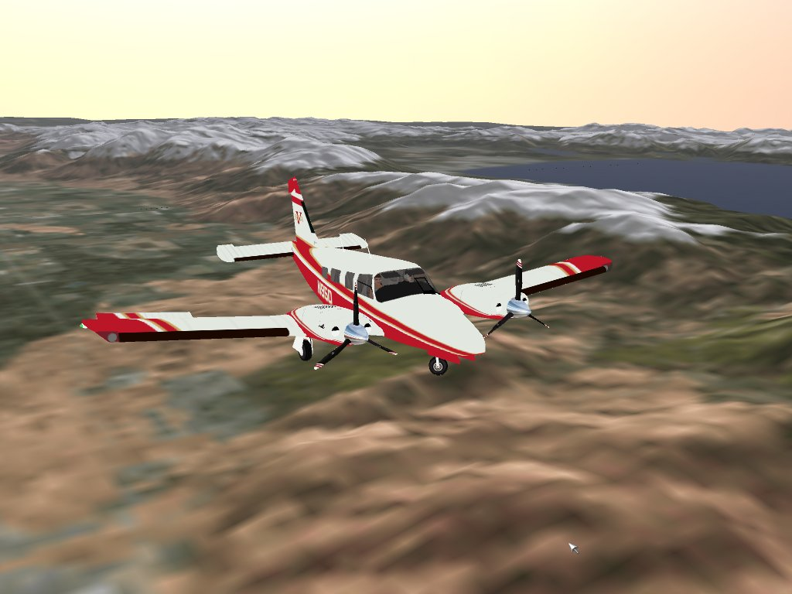
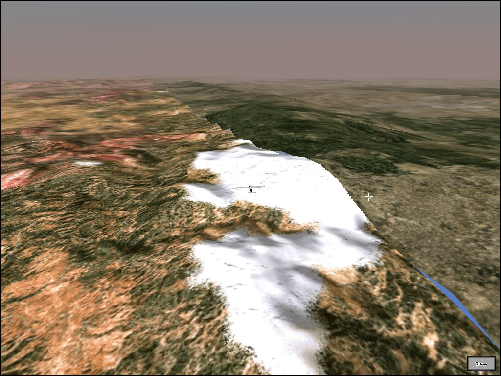
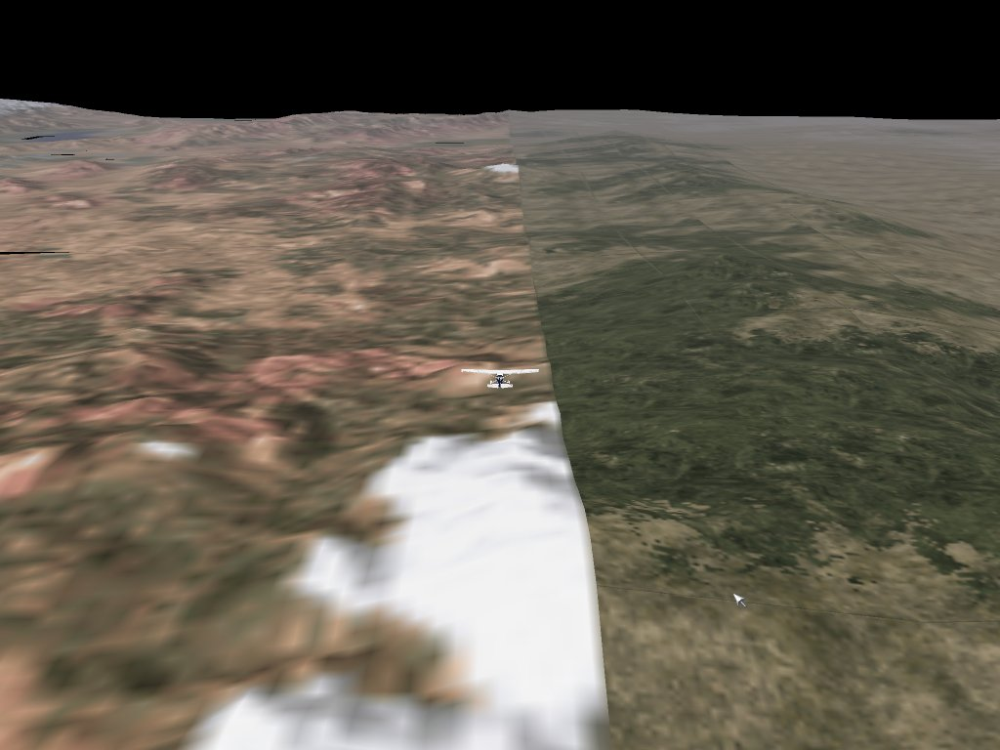
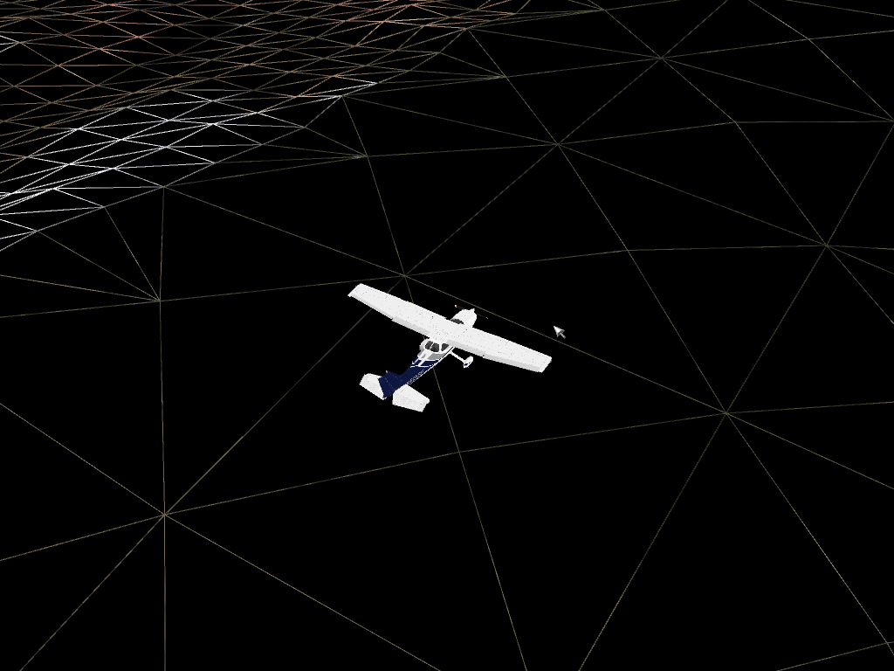

Screenshots
Terrain
The first screenshots simply show a region of sliced (customized)
terrain. Note the sky shading which uses the same algorithm as
Fly! II and is fully compatible with the Fly! II Sky Tweaker and
any custom skies.ini settings. It is important to note that in this
prototype terrain system
implementation, only low-resolution terrain textures are supported.
These were taken at the "proof of concept" point when support for sliced
scenery was first being implemented.
The sliced terrain is Dominique Klein's Lake Tahoe, and the aircraft is
ROTW's Seneca V.


The next screenshots compare transitions between custom (sliced) terrain and the default worldwide terrrain in Fly! II and Fly! Legacy. Note that in Fly! II, there are "gaps" due to mismatches between the higher-resolution elevation data in the sliced terrain area, and the more sparse elevation data of the default terrain. Today's faster processors may make it feasible to seamlessly blend these areas.
First, the transition area in Fly! II:

and the same region in Fly! Legacy:

Again, remember that the Fly! Legacy terrain engine is only using
very low-resolution textures at this time so the terrain lacks sharpness.
With the terrain system in wireframe debugging mode, you can see how
the sparse default terrain area blends into the adjacent higher-resolution
sliced terrain area by the addition of more vertices and triangles
as required:
